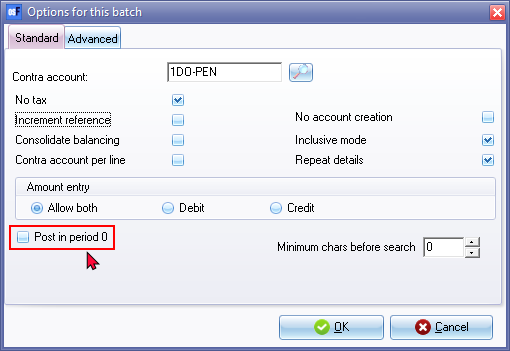
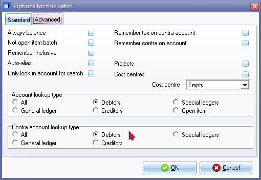
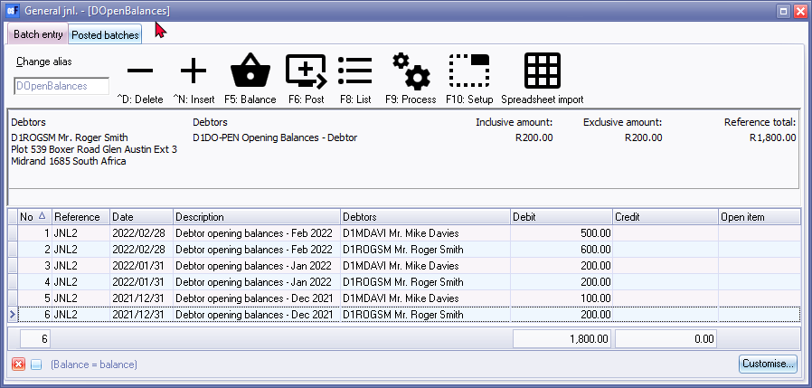
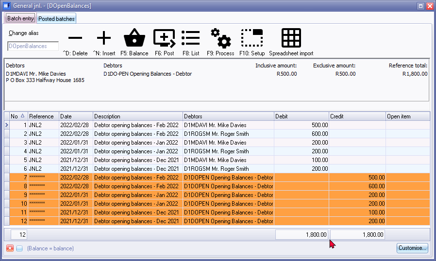
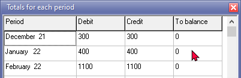
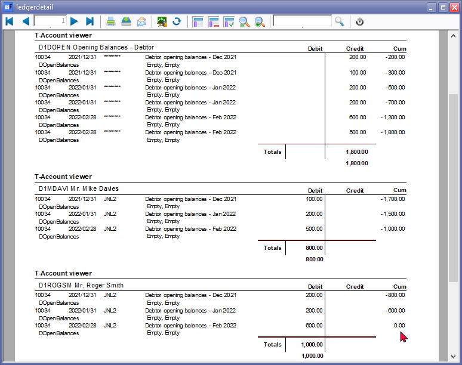
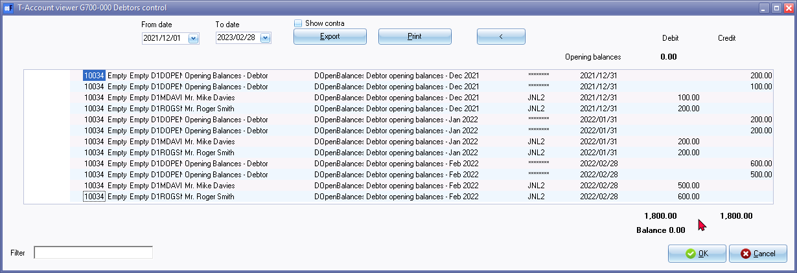
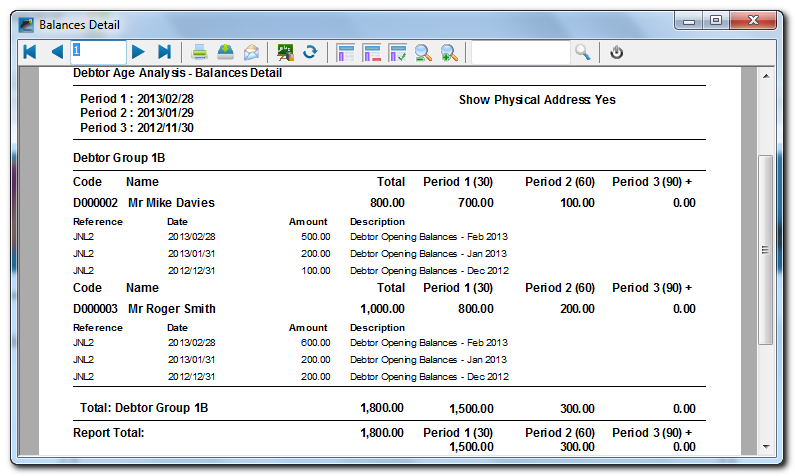

Take-on Debtor Opening Balances
Which records is required from your previous accounting system to take on opening balances in osFinancials?
When transitioning to a new accounting system like osFinancials and taking on opening balances, you will need certain records and information from your previous accounting system. Here are the essential records and data you should have:
- Trial Balance: Obtain a copy of the trial balance from your previous accounting system. This trial balance should include the closing balances of all your accounts at the end of the previous accounting period. It will serve as a starting point for entering opening balances in osFinancials.
- Chart of Accounts: Ensure you have a detailed list of your chart of accounts from the previous system. This list should include the account names, account numbers, and account types (e.g., assets, liabilities, equity, revenue, expenses).
- Debtor (Accounts Receivable) Reports: These reports show the outstanding amounts that your customers owe you. It's important to have records of outstanding customer invoices, sales orders, and customer statements as of the transition date. This information is necessary for accurately setting up your accounts receivable balances and creating accurate opening balances for your debtor accounts in osFinancials.
- Creditor (Accounts Payable) Reports: These reports show the outstanding balances you owe to your suppliers or creditors. You should obtain records of outstanding invoices, bills, and supplier statements as of the transition date. This information is necessary for accurately setting up your accounts payable balances and creating accurate opening balances for your creditor accounts in osFinancials.
- General Ledger Transactions: Depending on the complexity of your accounting, you might need access to detailed general ledger transactions for the accounts you're transferring. This is especially important if you have complex transactions, accruals, or prepayments that need to be accurately carried forward.
- Debtor (Customer/Client) Information: Information about your debtors (customers/clients), including contact details, credit terms, interest rate,==== and outstanding balances, can be helpful for setting up accounts receivable and accounts payable in osFinancials.
- Creditor (Supplier/Vendor) Information: Information about your creditors (suppliers/vendors), including contact details, credit terms, and outstanding balances, can be helpful for setting up accounts receivable and accounts payable in osFinancials.
- Customer Invoices and Statements: It can be helpful to have copies of customer invoices and statements, particularly if there are any discrepancies or disputes that need to be resolved during the transition.
- Supplier Invoices and Statements: It can be helpful to have copies of supplier invoices and statements, particularly if there are any discrepancies or disputes that need to be resolved during the transition.
- Aged Receivables Report: An aged receivables report shows how long each receivable has been outstanding. It can be useful for accurately ageing your outstanding debtor balances in osFinancials, especially if you plan to use the ageing facility in osFinancials.
- Aged Payables Report: An aged payables report shows how long each payable has been outstanding. It can be useful for accurately ageing your outstanding creditor balances in osFinancials, especially if you plan to use the ageing facility in the osFinancials.
- Tax Records: Ensure you have records of any outstanding sales tax or value-added tax (VAT) liabilities to accurately reflect your tax obligations in osFinancials.
- Asset and Liability Information: If you have assets or liabilities with specific details (e.g., depreciation schedules for assets, loan details for liabilities), gather this information to accurately carry it forward in your new accounting system.
- Bank Statements: If your bank account balances are part of your opening balances, obtain copies of your bank statements to reconcile and verify the balances.
- Opening Inventory Balances: If you manage inventory, you'll need records of your opening inventory balances to accurately reflect your inventory assets.
- Employee Records: If you handle payroll in your accounting system, ensure you have employee records, payroll tax information, and year-to-date payroll figures to transfer into osFinancials.
Having these records and data readily available will make the process of taking on opening balances in osFinancials smoother and more accurate. It's essential to maintain accuracy during the transition to ensure the continuity of your financial records and reporting.
To enter Opening Balances for your Debtor accounts:
- On the Default ribbon, select Batch entry (F2).
- Select the General Jnl and click on the Open button.
- Enter the Alias (batch name) in the Change alias field on the Topbar of the Batch entry screen. (In this example, DOpenBalances is used for Debtor Opening Balances).
- Click on the F10:Setup icon to set your batch up. The Options for this batch screen will be displayed. The settings are basically the same as for the Opening Balances of the General ledger account. Change the Batch Settings as follows:
- Standard tab – Select the Contra account for Opening Balances – Debtors (D000004) and Set Amount entry to Debit.

- Advanced tab – Set the Account lookup type and Contra account lookup type both to Debtor.

- Once setup, click on the OK button.
- Enter the following transactions:

|
|
The Opening Balances – Debtor account should reflect the total of all Debtor accounts (in the Debtor's control account). You only need to list (select) the individual debtor accounts and enter their balances. You may enter only the total outstanding balance (i.e. 1800.00 as per this example) as at 28 February 2013 for each debtor account (2 entries). If you wish to optimise the ageing facility in osFinancials 5, you may enter the balances for each debtor account as at the end of each period, e.g. 28 February 2016 – 1100.00, 31 January 2016 – 400.00 and 31 December 2015 – 300.00. |


- Click on the F5: Balance icon. osFinancials will generate balancing entries for each period. After entering the individual balances for each period, and balancing the batch, the transactions should be displayed as follows:

|
|
You may click on the F9: Process icon and select the "Totals per period" option. This will list the totals of all the Debit entries and all the Credit entries for each period. The difference should be zero.  |
- Click on the F8:List icon to print a list of the transactions in the batch.

- Click on the F6:Post icon, to post (update) the batch to the ledger.A confirmation message will be displayed.
“Do you want to continue posting? Batch contains transactions posting to last year!”
- Click on the Yes button, or press the Enter key to continue.
|
|
If you click on the No button, the transactions will not be posted. |

- osFinancials will post the entries for each period to the ledger.
The Opening Balances – Debtor account should have a zero balance after balances were debited to the individual Debtor accounts. 
The Batch for Opening Balances (e.g. BatchID 10027) should have a zero balance (credit transactions in Opening Balances – Debtor account = debit transactions individual Debtor accounts).
The Debtor age analysis report for 28 February 2013 (Reports → Debtors → Age analysis - Balances detail) will display the totals for each period as follows:
